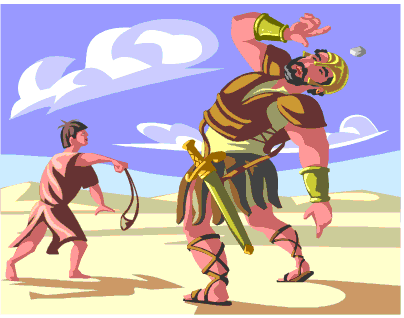

La Nation d'Israël
Tout au long du livre du Deutéronome, Dieu donna des instructions détaillées à son peuple sur la manière de vivre quand ils arriveraient à Canaan, le pays promis par Dieu à Abraham. Ces instructions incluaient même le type de gouvernement qu'ils devaient former. Au début, ils seraient régis par une série de juges (d’où l'existence du livre des Juges). Puis, dans le Deutéronome 17:14-15, Dieu annonça aux Israélites que des rois devaient gouverner le peuple, mais seulement des rois spécifiquement choisis (consacrés) par Dieu.
Bien que Saül, le premier roi d'Israël, ait été nommé par Dieu, il se montra désobéissant et d'une foi fragile. Dieu interrompit le règne de la lignée de Saül en Israël (le fils de Saül, Jonathan, ne lui succéda pas en tant que roi).
Comme nous l'avons vu dans l'introduction à la Bible dans la première section de ce livre, les différents livres sont regroupés selon leur type de littérature (genre). Les huit premiers livres, de la Genèse au livre de Ruth, racontent les événements de l'histoire ancienne dans l'ordre chronologique (l'ordre dans lequel ils se sont produits). L'histoire de la nation d'Israël est racontée dans un certain nombre de livres de l'Ancien Testament, mais pas dans l'ordre chronologique. Pour avoir une meilleure idée de ce qui est arrivé, à qui et quand, il est utile d'avoir un livre de référence comportant une chronologie du déroulement des événements et où ces histoires peuvent être trouvées dans l'Ancien Testament. Voici un tableau très abrégé des rois d'Israël et où leurs histoires se trouvent dans l'Ancien Testament.
| 1050 avant J.-C. | |||||||
| 1010 avant J.-C. | |||||||
| 970 avant J.-C. | |||||||
| 925 avant J.-C. - 722 avant J.-C. | |||||||

Roi David
L'homme qui deviendrait le prochain, et peut-être le plus grand roi d'Israël, était d'une origine plutôt improbable. David était le plus jeune fils (et non le plus âgé, comme le sont habituellement les rois) d'un homme vivant dans un village assez éloigné appelé Bethléem. (Ce nom vous semble familier?) C'est par la lignée de David (ses descendants) que Jésus allait naître!
Comme tous les hommes que Dieu avait précédemment choisi afin de l'aider à accomplir sa volonté dans le monde, David n'était pas parfait. Il commit des péchés très graves au cours de son règne. Pourtant, dans le premier livre de Samuel 13:14, Dieu dit au prophète Samuel que David est un homme modelé selon le cœur de Dieu lui-même.

Une Nation Désobéissante
Le fils de David, Salomon, lui succéda comme roi. Salomon est célèbre pour ses connaissances et sa sagesse. Ce fut lui qui conduisit Israël à compléter la construction du magnifique temple conçu par son père David. La rédaction d'au moins deux livres de l'Ancien Testament est attribuée à Salomon: le Cantique des cantiques (un poème d'amour!) et l'Ecclésiaste.
Rappelez-vous, le premier commandement de Dieu à son peuple était qu'il ne devait PAS avoir d'autres dieux. Malheureusement, Israël était entouré de tribus et de nations qui adoraient divers dieux et idoles. Salomon fit venir beaucoup de ces étrangers en Israël pour aider à construire le temple; avec ces ouvriers vinrent leurs idoles. Comme nous l'avons tous un jour constaté dans notre propre vie, il est difficile d'être constamment entouré de personnes qui ne sont pas comme nous et ont des croyances différentes et ne pas commencer à adopter certaines de leurs croyances et pratiques, surtout si notre foi est fragile. C'est ce qui arriva à la nation d'Israël.
Bien que de nombreuses manières Salomon soit un grand roi, son règne fut souvent marqué par la sévérité. Il prélevait de lourds impôts sur le peuple pour construire le temple ainsi qu'un palais luxueux pour lui-même. Ceci, entre autres, causa la division de la nation d'Israël en deux royaumes (Juda au sud, Israël au nord).

Dieu Envoie des Avertissements par Ses Prophètes
La nation d'Israël avait été choisie par Dieu pour être son peuple, mais à maintes reprises, les Juifs se tournèrent vers les idoles des peuples voisins. Ce culte d'idoles incluait souvent des pratiques telles que le sacrifice d'enfants et l'immoralité sexuelle que Dieu ne pouvait tout simplement pas tolérer de son peuple.
Encore et encore, Dieu envoya des prophètes à son people pour les avertir qu'il y aurait de graves conséquences pour leur désobéissance. La dernière section de l'Ancien Testament contient les paroles que Dieu a inspiré ses prophètes à dire. Toutes les prédictions faites par Dieu et transmises par ses prophètes concernant la défaite et l'exil d'Israël se réalisèrent.
Pour voir l'ordre des écrits des prophètes, nous pouvons les placer dans un tableau semblable à celui des rois israéliens. Les événements qui eurent lieu à l'époque des premiers et deuxièmes livres de Samuel, des Rois et des Chroniques étaient ceux-là même mêmes dont les prophètes essayaient de prévenir les Israéliens.
Une Nation Vaincue
Les trois derniers livres de l'Ancien Testament, d'Aggée, Zacharie et Malachie, ont été écrits pour encourager le peuple juif post-exil à raviver son ancienne foi en Dieu et à redevenir fidèle dans son adoration de Dieu (judaïsme).

Après un certain nombre de faux départs, ils purent même construire un nouveau temple. Ce n'était que l'ombre du glorieux temple originel construit sous le roi Salomon, mais malgré tout, c'était un lieu dans leur patrie où ils pouvaient finalement adorer de nouveau l'unique vrai Dieu.
Bien que les Israélites aient été autorisés à retourner dans leur patrie après une cinquantaine d'années en exil, ceux qui revinrent n'étaient plus que l'ombre du peuple juif. Les jours de gloire d'Israël étaient terminés: le temple avait été pillé et détruit, et ils ne se gouverneraient plus jamais eux-mêmes. Leur pays serait sous la domination d'un empire ou d'un autre jusqu'en 1948, lorsque la nouvelle nation d'Israël fut constituée après la Seconde Guerre mondiale.
Et tandis que les prophètes prédisaient la chute d'Israël, à leurs prédictions se mêlaient des prophéties concernant un Sauveur, un Messie qui scellerait une nouvelle alliance entre Dieu et son peuple.
Dieu demanda au peuple vaincu de croire que, même à cette heure des plus sombres, le futur se trouvait toujours entre ses mains et il désirait toujours avoir une relation avec l'humanité, sa plus haute création.

Les Temps Avant et Après la Vie de Jésus
L'Histoire entière est divisée en deux parties: avant et après la naissance de Jésus. L'année de notre calendrier est le nombre d'années depuis la naissance de Jésus.
Nous marquons maintenant les dates de l'Ancien Testament et antérieures avec l'expression «av. J.-C.», qui signifie «avant Jésus-Christ». Les dates après la naissance de Jésus sont parfois désignées par «apr. J.-C.», qui signifie « après Jésus-Christ».
Certaines personne qui ne croient pas que Jésus était le Messie, le Fils de Dieu, voudraient le retirer de notre système de datation. Ils ont commencé à utiliser l'expression «avant notre ère». Mais « notre ère » est définie par le fait de la présence de Jésus sur la terre, donc tout cela signifie la même chose! Ainsi, comme nous l'avons déjà dit, l'Histoire est divisée en deux parties: avant et après la naissance de Jésus.

Le Judaïsme (Culte de Dieu) Après L'Exil
Le culte juif avait toujours consisté à offrir des sacrifices d'animaux à Dieu pour le pardon des péchés. Vous souvenez-vous que Dieu dit à Adam et Ève qu'ils devaient mourir pour leur péché? Pour les Juifs, sacrifier un animal à Dieu, comme il leur avait ordonné de le faire, symbolisait l'échange d'une vie sacrifiée pour leurs péchés.
Comme nous en avons discuté, lorsque les Juifs retournèrent en Israël après leur exil, les prophètes ont encouragèrent le peuple à recommencer à adorer Dieu et à obéir à tous ses commandements.
Il semblait que le peuple juif (à tout le moins ceux qui étaient rentrés en Israël) avait finalement appris leur leçon: Dieu ne tolérerait pas l'adoration d'idoles et la désobéissance. Les prêtres juifs, qui s'élevèrent pour gouverner les Juifs comme conséquence naturelle de leur leadership spirituel, contribuèrent à créer une société déterminée à être fidèle: ils ne se laisseraient pas influencer par des cultures extérieures et feraient de leur mieux pour obéir à la lettre à toutes les lois de Dieu. C'était la société dans laquelle Jésus, le Messie, naquit.
Sous l'ancienne alliance, Dieu avait promis santé et prospérité à ceux qui obéiraient à ses commandements. La nation d'Israël était devenue puissante et riche grâce à la confiance placée en Dieu. Ce dont les Juifs revenus en Israël n'avaient pas conscience, c'est qu'avec la chute d'Israël, l'ancienne alliance n'était plus en vigueur.
Grands Hommes et Femmes de L'Ancien Testament
Nous avons abordé une longue période en seulement quelques pages, mais la Bible est remplie d'histoires de grands hommes et femmes de Dieu. Vous devriez apprendre à les connaître! Voici une liste en guise de point de départ; lorsque vous commencerez à lire la Bible, vous trouverez sans doute encore beaucoup d'autres personnes qui pourraient figurer dans cette liste. Pourquoi ne pas commencer par ceux-ci, puis, en avançant dans votre lecture, vous pourrez créer votre propre liste de «grands personnages de la Bible»! Assurez-vous de marquer les chapitres et versets lorsque vous les trouvez, afin de pouvoir vous y référer à tout moment!
Commençons!
Avant d'aller plus loin dans ce livre, ce pourrait être une bonne idée de consulter dès maintenant certains des passages cités plus haut ou dont les référence sont fournies. Ce serait une excellente pratique pour apprendre à rechercher les références par «chapitre et verset».